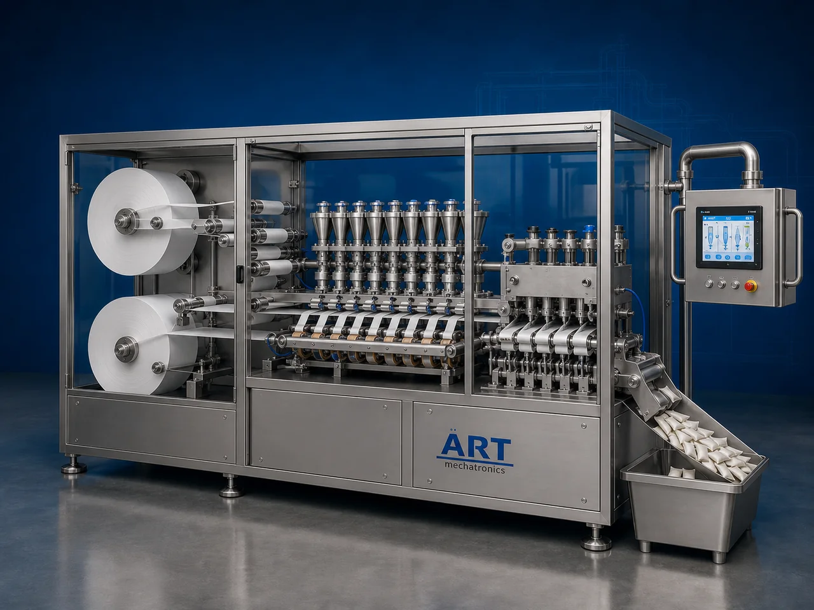

Oral Pouches Packaging Machine (Automatic Nicotine, Snus, Snuff & Filter Khaini Pouch Filling & Sealing System)
An Oral Pouches Packaging Machine, also known as a Nicotine Pouch Packaging Machine, Snus Pouch Packing Machine, Snuff Pouch Filling Machine, Caffeine Pouch Packaging Machine, or Filter Khaini Pouch Filling & Sealing Machine, is an advanced industrial packaging solution designed for automatic oral pouch forming, powder dosing, filling, weighing, sealing, cutting, coding, and high-speed packaging operations for nicotine products, snus products, snuff powders, caffeine pouches, herbal oral products, and smokeless pouch applications.

About the Oral Pouches
Oral pouch packaging systems are widely used for:
- Nicotine pouch packaging
- Snus pouch packaging
- Snuff pouch packaging
- Caffeine pouch packaging
- Filter khaini pouch packaging
- Smokeless oral pouch packaging
- Premium FMCG pouch packaging
- Continuous industrial pouch production
The machine improves:
- Product hygiene
- Filling accuracy
- Pouch consistency
- Moisture protection
- Shelf life protection
- Production efficiency
- Premium retail presentation
Industrial oral pouch packaging machines use:
- Nonwoven pouch material feeding systems
- Servo synchronized filling technology
- PLC and HMI automation controls
- Precision sealing systems
- Automatic pouch cutting and handling mechanisms
to automatically form, fill, and seal oral pouches with superior packaging quality and high production efficiency.
Oral pouch packaging machines are widely used in industries such as:
Tobacco industries Nicotine product industries Snus industries Smokeless oral product industries FMCG industries Herbal product industries Nutraceutical industries Functional oral pouch industries
where hygienic pouch production and precise dosage consistency are essential.
The machine is highly suitable for:
- Nicotine pouch packaging
- Snus packaging
- Snuff pouch packaging
- Filter khaini packaging
- Caffeine pouch packaging
- Herbal oral pouch packaging
ART Mechatronics offers high-performance oral pouch packaging machines, engineered for continuous industrial operation, accurate filling, premium sealing quality, and reliable long-term packaging automation.
Working Principle of Oral Pouches Packaging Machine
- 1. Nonwoven Material Feeding Food-grade nonwoven pouch material roll is loaded into feeding section.
- 2. Oral Pouch Forming Process Machine automatically forms oral pouches using precision pouch forming systems.
Servo synchronization ensures smooth material movement and accurate pouch formation.
- 3. Product Filling Operation Machine handles: ✔ Nicotine products ✔ Snus products ✔ Snuff powders ✔ Caffeine products ✔ Filter khaini ✔ Herbal oral products
accurately and continuously.
- 4. Pouch Sealing & Cutting Process Machine performs: Heat sealing Airtight sealing Leak-proof sealing Automatic pouch cutting Moisture-protected sealing
for hygienic and premium packaging quality.
- 5. Coding & Inspection Integration Optional systems include: Batch coding Date printing QR code printing Metal detection Check weighing
- 6. Finished Pouch Discharge Finished pouches discharged automatically for: Can filling Retail display Secondary packaging Dispatch operations
Types of Oral Pouches Packaging Machines
- 1. Nicotine Pouch Packaging Machine Designed for: ✔ Tobacco-free nicotine pouch applications
- 2. Snus Pouch Packaging Machine Suitable for: ✔ White snus and oral tobacco pouch packaging systems
- 3. Snuff Pouch Filling Machine Uses: ✔ Smokeless powder pouch packaging applications
- 4. Filter Khaini Pouch Machine Designed for: ✔ Filter khaini and oral tobacco packaging systems
- 5. Servo Driven Oral Pouch Machine Suitable for: ✔ Precision high-speed oral pouch packaging operations
- 6. Fully Automatic Oral Pouch Packaging System Designed for: ✔ Complete industrial oral pouch production automation lines
Industries Using Oral Pouches Packaging Machines
🚬 Tobacco & Nicotine Industry Nicotine pouches, snus, smokeless tobacco, oral tobacco, and snuff pouch packaging systems. 🌿 Herbal Product Industry Herbal oral pouch and botanical pouch packaging systems. ⚡ Functional Product Industry Caffeine pouch and functional oral pouch packaging systems. 🛒 FMCG Industry Premium consumer oral pouch packaging systems. 💊 Nutraceutical Industry Functional and nutraceutical oral pouch packaging systems.
Features & Advantages
- High-speed automatic oral pouch filling and sealing operation
- Accurate dosing and synchronized pouch handling
- Premium retail pouch packaging appearance
- Supports nicotine, snus, snuff, and caffeine pouch formats
- PLC and servo automation control systems
- Improves product hygiene and shelf life protection
- Reduces packaging wastage and labor dependency
- Hygienic production system available
- Reliable long-term industrial performance
Technical Highlights
Machine Type: Nicotine pouch packaging machine Snus pouch filling machine Oral pouch packaging machine Packaging Material: Nonwoven pouch material Heat seal pouch material Oral pouch packaging films Filling Integration: Precision dosing systems Micro auger fillers Servo filling systems Features: PLC control system Servo synchronization Touchscreen HMI Automatic pouch cutting Batch coding integration Sealing Type: Heat seal Airtight seal Leak-proof seal Automation: Semi-automatic Fully automatic industrial systems
Turnkey Oral Pouches Packaging Solutions
ART Mechatronics offers: Complete oral pouch packaging systems Nicotine pouch filling and sealing solutions Packaging automation integration systems Conveyor synchronization systems Installation & commissioning After-sales service & AMC
Why Choose Art Mechatronics
Expertise in industrial packaging and automation systems Customized oral pouch packaging solutions for multiple industries High-performance and durable packaging technology Advanced PLC and servo automation systems Proven industrial packaging performance across sectors
Applications
Nicotine Pouch Manufacturing Plants Snus Processing Industries Smokeless Oral Product Industries Tobacco Processing Units FMCG Packaging Facilities Nutraceutical Industries
Get pricing & specs for the Oral Pouches
Share the product, target capacity, current process and plant location. These details help our engineers discuss the right machine or line configuration.
One partner, from design to start-up
ART Mechatronics designs, manufactures, installs and commissions your Oral Pouches solution with regional presence in India, UAE and Thailand.